电力系统宽频振荡监测主站系统（WAMS 2.0）
概述
电力系统实时动态监测系统（WAMS）适用于广域电网、区域电网运行机构对电网运行动态过程的监视与分析。经过近20年的发展，中国已经建成世界规模最大的WAMS系统，已有接近5000个厂站安装了PMU装置，在支撑广域电网安全稳定运行方面发挥了巨大作用。
为适应风电场与光伏电站大规模并网、电能大范围输送、可再生能源占比越来越高的中国电网发展趋势，支撑电网调控中心应对特高压交直流混联电网的复杂特性，四方公司推出电网宽频振荡监测系统（WAMS 2.0）。
系统架构
电力系统宽频振荡监测系统由位于发电厂、变电站、新能源厂站的新型同步相量测量装置和位于多级调控中心的监测系统主站构成。
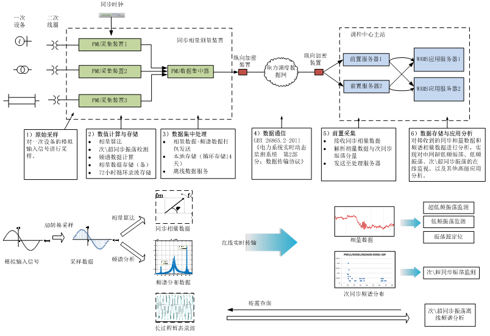
图1电力系统宽频振荡监测系统架构图
主要功能
1）基于Prony的振荡模式在线提取
计算功率波动最强机组、线路的主导振荡模式，提取相邻区域厂站注入功率的振荡模式，按照相位进行在线分群，结合电网拓扑关系辅助确定扰动源。
 （2-1）节点振荡模态筛选
（2-1）节点振荡模态筛选
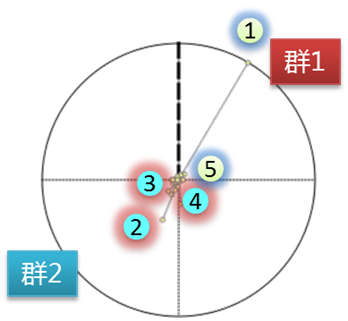 （2-2）基于振荡模态在线分群
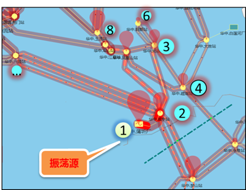 （2-3）辅助振荡源定位
图2 在线振荡模式提取功能
2）基于暂态能量法的强迫振荡源定位
根据主导振荡模式频率，提取机组出力、厂站注入功率、线路功率的主导振荡曲线，进行暂态能量积分，通过对节点注入暂态能量的积分曲线，结合网络拓扑关系，确定振荡源。
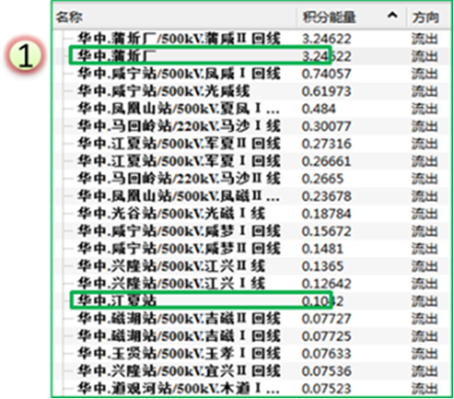 （3-1）振荡能量流出
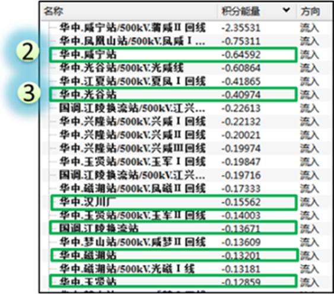 （3-2）振荡能量流入
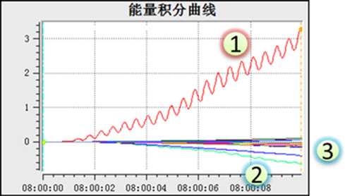 （3-3）振荡能量积分曲线
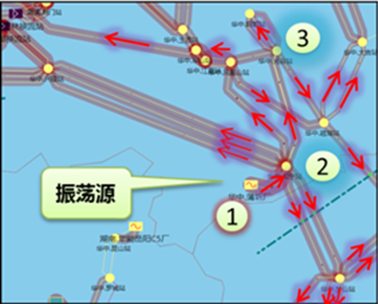 （3-4）振荡源定位
图3 强迫振荡源定位功能
3）宽频振荡在线监测
对振荡最直观的展示效果是对输电线路进行振荡功率的渲染，在对监视频段内可能出现的超低频振荡、低频振荡（区间）、低频振荡（局部）、中高频振荡和次超同步振荡事件，通过振荡类型指示灯进行目标振荡模态的切换，通过渲染振荡路径进行振荡波及范围与影响程度分析。
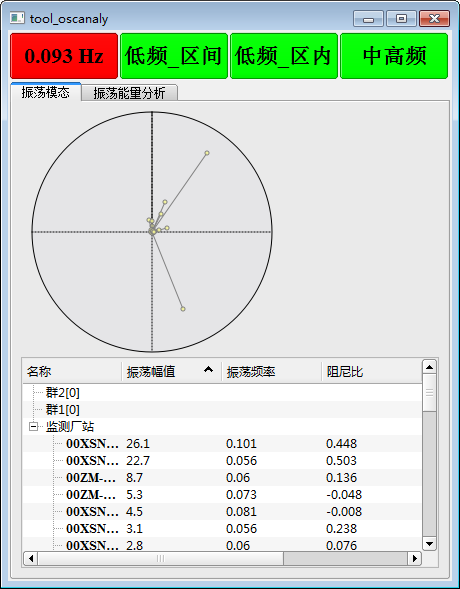
（4-1）超低频振荡模态
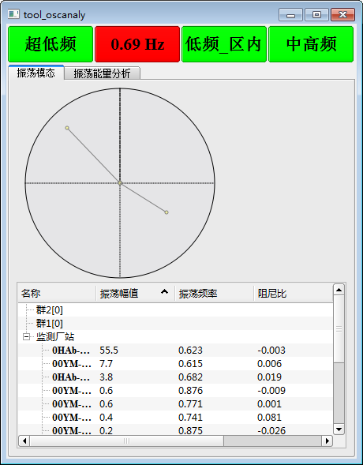
（4-2）区间低频振荡模态
图4 宽频振荡在线监测
4）电网运行动态一体化监视
基于时间驱动与拓扑关系的电网运行动态一体化监视工具整合地理接线图、关键数据曲线、振荡模态、告警信息等核心元素，以时序信息表现电网运行的时域变化趋势，以等高线渲染、有向着色线段等方式表现电网运行的空间分布态势
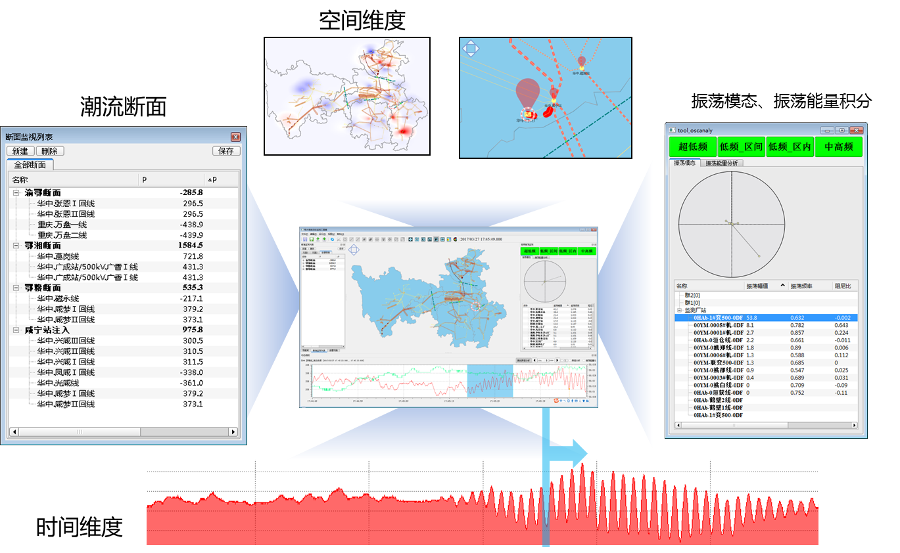
图5 基于时间驱动的一体化监视与振荡可视化工具
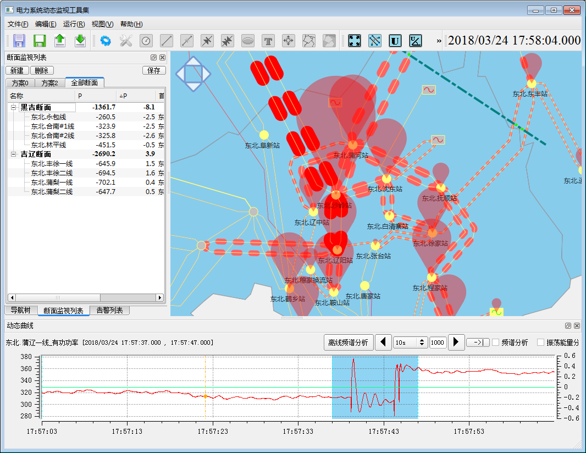
图6 故障潮流转移监视模式
系统特点与优势
与WAMS系统现状相比，具有如下关键特征与优势。
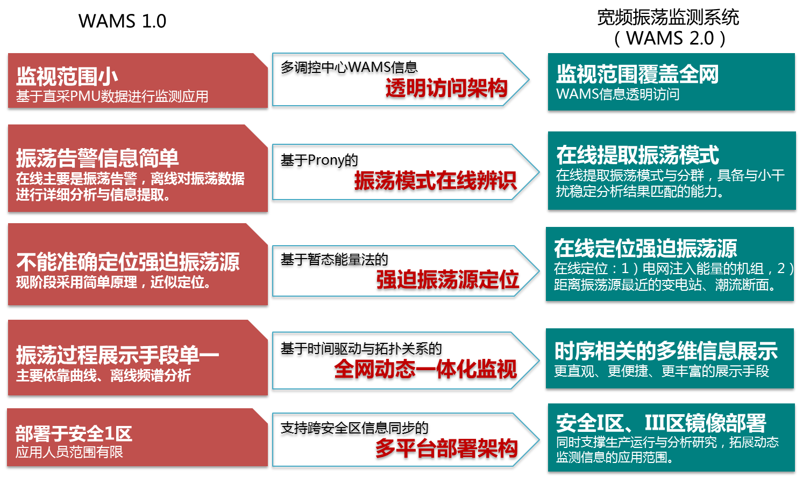
图7 关键技术特征与优势
- 监测信号频段宽，覆盖超低频振荡、低频振荡、中高频振荡以及次/超同步振荡判断
- 采用弹性设计架构，支持调控中心独立部署，支持分层分级调控中心协同部署
- 采用复合振荡源定位算法，低频振荡监视与强迫振荡源定位结果更准确可靠
- 支持安全Ⅰ区、Ⅲ区镜像部署，具备良好的应用扩展机制
- 时序相关的多维信息展示机制，提供更直观、更便捷、更丰富的可视化效果，有效进行电网运行宽频振荡模式的追踪与监测